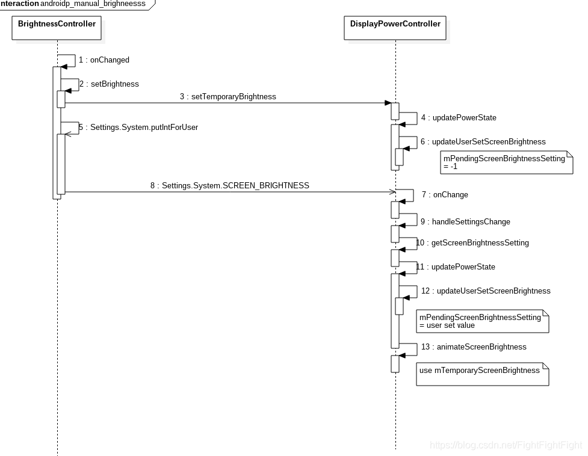
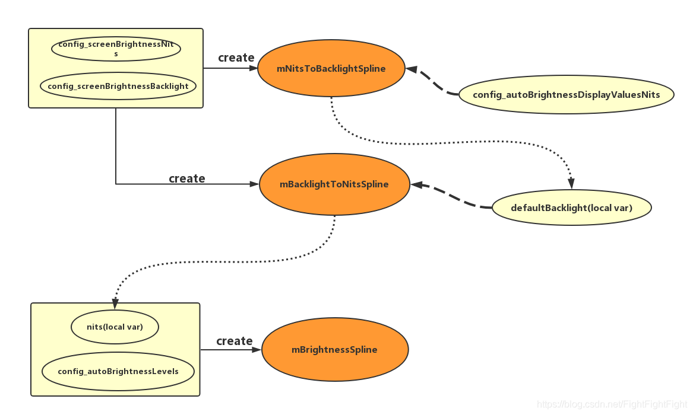
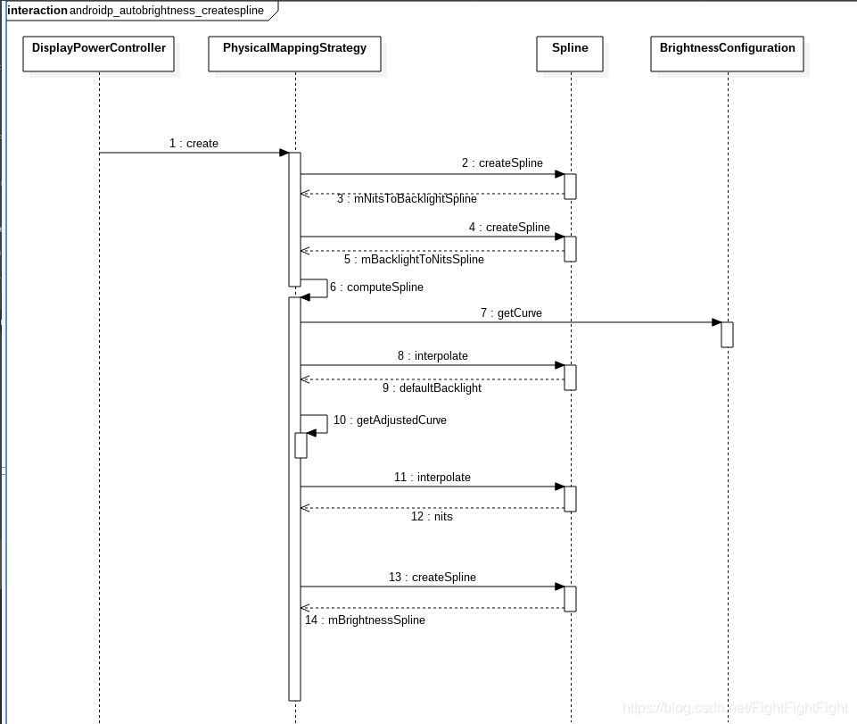
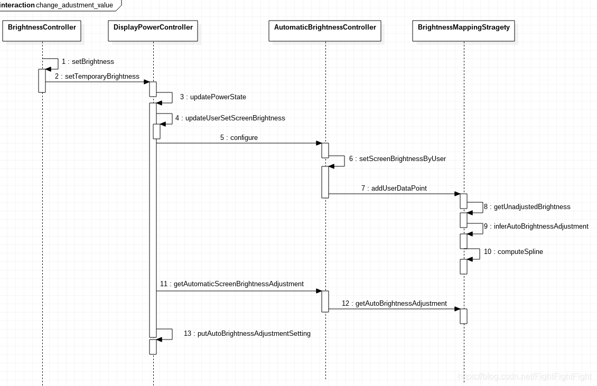

参考Android R源码，对背光手动调节、自动调节的流程作简单梳理。
SystemUI-settings手动背光调节
函数调用流程
1 | frameworks/base/packages/SystemUI/src/com/android/systemui/settings/BrightnessController.java - onChanged ----> |

部分代码梳理
- BrightnessController.java设置背光：
1 | //frameworks/base/packages/SystemUI/src/com/android/systemui/settings/BrightnessController.java |
- AIDL跨进程（bind call）到DMS.java
1 | //frameworks/base/services/core/java/com/android/server/display/DisplayManagerService.java |
异步任务机制AsyncTask
在Android中实现异步任务机制有两种方式：Handler和AsyncTask
相比于Handle模式需为每个文物创建新县城，发送消息接受消息过程精细，工具类android.os.AsyncTask使创建异步任务变得更加简单
注意点：
- 实例必须在UI线程中创建
- execute必须在UI线程中调用
- 不要手动调用onPreExecute，doInBackground，onProgressUpdate，onPostExecute方法
- 不能在doInBackground(Params… params)中更改UI组件的信
- 一个任务实例只能执行一次，如果执行第二次将会抛出异常
异步任务主要方法
AsyncTask是一个泛型类，它的三个类型参数的含义如下：
- Params：doInBackground方法的参数类型；
- Progress：AsyncTask所执行的后台任务的进度类型；
- Result：后台任务的返回结果类型。
方法：
- execute(Params… params)，执行一个异步任务，需要在代码中调用此方法，触发异步任务的执行
- onPreExecute()，在execute(Params… params)被调用后立即执行，一般用来在执行后台任务前对UI做一些标记
- doInBackground(Params… params)，在onPreExecute()完成后立即执行，用于执行较为费时的操作，此方法将接收输入参数和返回计算结果。在执行过程中可以调用publishProgress(Progress… values)来更新进度信息
- onProgressUpdate(Progress… values)，在调用publishProgress(Progress… values)时，此方法被执行，直接将进度信息更新到UI组件上
- onPostExecute(Result result)，当后台操作结束时，此方法将会被调用，计算结果将做为参数传递到此方法中，直接将结果显示到UI组件
自动背光调节
主要变量
代码主要在frameworks/base/services/core/java/com/android/server/display目录下的DisplayPowerController.java和AutomaticBrightnessController.java
- 在
AutomaticBrightnessController.java中定义了一些自动背光的变量：
- mScreenAutoBrightness：屏幕亮度级别是由自动亮度算法决定的，实际的亮度应向这个值靠拢。我们保留这个值，即使我们停止使用光传感器，以便我们可以快速恢复到之前的自动亮度级别
- mResetAmbientLuxAfterWarmUpConfig：如果设置为true，屏幕点亮后，控制器根据当前传感器读到的值调整亮度；如果是false，控制器将收集更多的数据，然后决定是否改变亮度
- mAmbientLux：当前接收的环境光级别
- mAmbientLightRingBuffer：用来保存最近环境光传感器读值的环形传感器
- AMBIENT_LIGHT_PREDICTION_TIME_MILLIS=100：假定当前传感器读数超出当前时间的有效期，并且确保最后样本的权重非0，这反过来确保了总权重非0
- mLightSensorWarmUpTimeConfig：亮屏后在等待光传感器准备时自动亮度调整时间，以毫秒为单位。该值在创建AutomaticBrightnessController对象时被入参赋值
BrightnessMappingStrategy类负责创建背光曲线（从BrightnessConfigure类中读取两个数组源:config_autoBrightnessLevels和config_autoBrightnessDisplayValuesNits），计算自动背光值背光相关名词
- 光照度（照度）：从光源照射到单位面积上的光通量,以E表示,照度的单位为勒克斯(Lux)
DisplayPowerController初始化背光属性变量
- 首先通过initPowerManagement方法new一个DisplayPowerController对象
1 | private final class LocalService extends DisplayManagerInternal { |
- DisplayPowerController构造函数中初始化了很多和亮度相关的属性变量。
- mBatteryStats：获取电池信息service状态用于更新电池电量
- mSensorManager：获取SensorManager用于调节吧诶广
- mWindowManagerPolicy： 亮屏时调用到window绘制屏幕
- mBlanker：亮屏以及设置背光时调用到DisplayPowerState的中介类对象
- mScreenBrightnessDozeConfig：Doze状态配置亮度
- mScreenBrightnessDimConfig：暗屏状态配置亮度
- mScreenBrightnessRangeMaximum：屏幕最大亮度
- mScreenBrightnessRangeMinimum：屏幕最小亮度
- mUseSoftwareAutoBrightnessConfig：是否支持自动亮度
- lightSensorWarmUpTimeConfig：Light sensor启动时间
- lightSensorRate：sensor采集数据频率，配置在frameworks/base/core/res/res/values/config.xml，默认250
- brighteningLightDebounce：变亮防抖时间，同上，默认4000
- darkeningLightDebounce：变暗防抖时间，同上，默认8000
- autoBrightnessResetAmbientLuxAfterWarmUp：当sensor启动时重置环境光照值，同上，默认true
创建背光曲线（映射）
创建曲线示意图
整体来看，共创建了三条样条曲线，对Lux-Nit-Backlight进行映射。和8.1不同的是，并非直接由Lux和Baclight映射，而是将Nit作为Lux和Backlight的中间介质。
- mNitsToBacklightSpline
- mBacklightToNitsSpline
- mBrightnessSpline

流程：

构造函数开始创建
在上面DisplayPowerController构造函数中会调用以下函数：mBrightnessMapper = BrightnessMappingStrategy.create(resources);
而BrightnessMappingStrategy.java的create函数中获取配置文件config.xml中的配置值（厂商会覆盖重新配置，一般路径会有overlay），然后根据这个配置值决定映射方式：
- config_autoBrightnessLevels：环境光lux值，等级和背光对应
- config_autoBrightnessLcdBacklightValues：背光等级
1 | <!-- Lux值数组--> |
创建函数：
1 |
|
（1） PhysicalMappingStrategy构造函数
一般执行此处流程：
1 | //=================== |
（1.1） PhysicalMappingStrategy中的computeSpline
1 | private void computeSpline() { |
Pair容器类
Pair对两个对象组成的元素组进行传递。这个对象提供了一个合理的equals()方法，如果两个对象的first和second值相等则返回true
特征：
- Pair(F first, S second)，一个Pair容器里面有2个元素，他们成组存在。
- Pair里面两个元素都是final的
- Pair的equals是值比较，不是地址比较
示例：
1 | String PAIR = "PAIR"; |
（2） SimpleMappingStrategy构造函数
1 | //=================== |
（2.1） SimpleMappingStrategy中的computeSpline
1 | private void computeSpline() { |
AutomaticBrightnessController初始化
在DisplayPowerController构造函数中创建了AutomaticBrightnessController对象
1 | .... |
*configure方法配置AutomaticBrightnessController
- 在
updatePowerState()中也会对mAutomaticBrightnessController对象进行配置：
1 | private void updatePowerState() { |
配置的参数：
- autoBrightnessEnabled：表示自动背光是否可用
1 | final boolean autoBrightnessEnabledInDoze = |
- mBrightnessConfiguration：BrightnessConfiguration对象，携带有用于创建曲线的Lux值数组和对应的Nit值数组。每一个用户可对应一个BrightnessConfiguration，由DisplayManagerService设置
- userSetBrightnessChanged：用户是否手动通过拖动亮度条设置过亮度
- autoBrightnessAdjustmentChanged：自动背光调整至adjustment是否发生变化（对应的即下面configure中的
userChangedAutoBrightnessAdjustment） - displayPolicy：当前请求的屏幕状态
- configure()函数方法
1 | public void configure(boolean enable, @Nullable BrightnessConfiguration configuration, |
1. setBrightnessConfiguration
- 针对每个用户，都会有一个BrightnessConfiguration和它映射，所以当切换用户后，设备的背光将可能发生改变
- 当BrightnessConfiguration发生改变且在BrighnessMappingStragety中设置完成后，将会通过resetShortTermModel()清除原有用户的配置
清除用户设置的亮度和对应Lux的三种情况：
- 切换用户：handleSettingsChange
- BrightnessConfigure对象发生变化：setBrightnessConfiguration
- 屏幕进入不可交互状态超过30s，且再次进入交互状态后环境光发生变化：setDisplayPolicy
1 | //display/AutomaticBrightnessController.java |
2. setDisplayPolicy
该方法主要根据屏幕状态来设置mShortTermModelValid的值
当屏幕状态进入Doze或者Asleep后，会发送一个定义Handler，并在到达时间后将mShortTermModelValid值置为false
1 | //display/AutomaticBrightnessController.java |
3. setAutoBrightnessAdjustment
用于设置自动背光调整值，前提是自动背光调整值已经发生变化
1 | //display/AutomaticBrightnessController.java |
4. setScreenBrightnessByUser
用于将用户拖动亮度条设置的亮度和当时的Lux值添加到用于创建曲线的数组中，并重新创建曲线
1 | //AutomaticBrightnessController.java |
5. prepareBrightnessAdjustmentSample
调用configure更新时，做一些标记记录
6. setLightSensorEnabled
用于LightSensor的注册和解除注册，当设备处于亮屏状态且打开自动背光功能时，将注册一个LightSensor，以监听环境光的强度变化
1 | //AutomaticBrightnessController.java |
7. *updateAutoBrightness自动背光获取
更新自动背光亮度值
从这处流程可以看出自动背光获取的方式：
- 首先会根据当前的Lux值，从mBrightnessSpline曲线中寻找对应的Nit值
- 然后根据Nit值，从曲线mNitsToBacklightSpline中获取到最终的背光值
其中mBrightnessSpline曲线是由Lux值数组和它对应的Nit值数组创建，mNitsToBacklightSpline是由配置文件中的config_screenBrightnessNits和config_screenBrightnessBacklight创建
具体的创建在computeSline()方法中
1 | //AutomaticBrightnessController.java |
adjustment变量计算
例如dump我的一加六（Android 10）设备，adb shell dumpsys display信息：
1 | //开启自动亮度调节后dump |
用户手动调节亮度条
入参adjustment，范围是[-1.0, 1.0]
DisplayManager的setTemporaryAutoBrightnessAdjustment接口供上层应用调用，作为入口
1 | frameworks/base/core/java/android/hardware/display/DisplayManager.java - setTemporaryAutoBrightnessAdjustment ----> |
大致流程：

1 | //DisplayPowerController.java - updatePowerState |
debug调试
- dump power：执行命令
adb shell dumpsys power|grep "Brightness"查看背光相关 - 抓取log查看上层背光变化，背光节点，以及kernel中背光变化
- 在DisplayPowerController.java中将Debug log开关打开
- 使用dump查看自动亮度调节的变量值:
adb shell dumpsys display
参考
Android Message和obtainMessage的区别